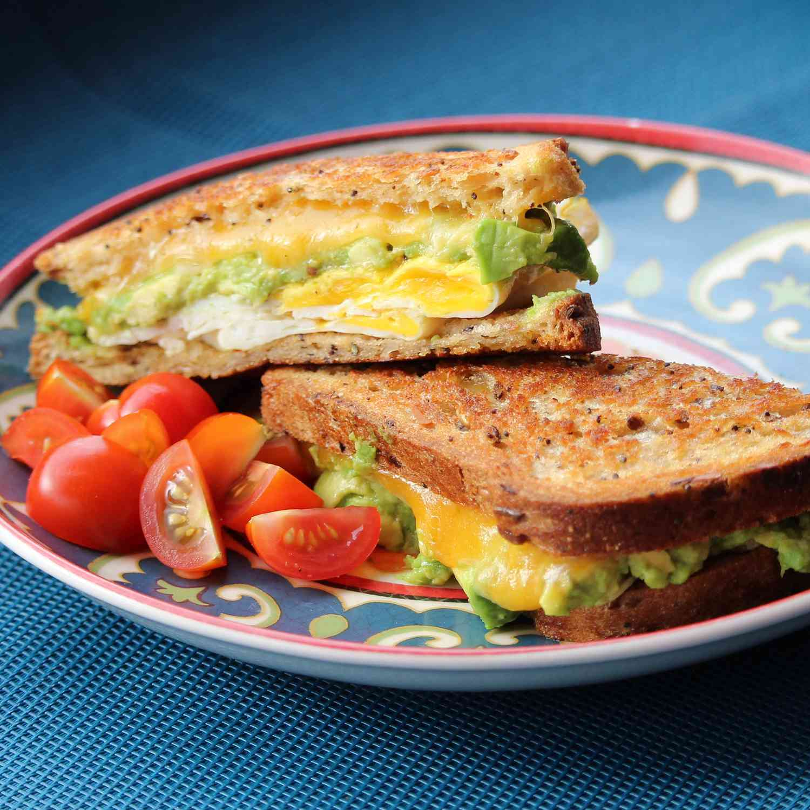

Breakfast Sandwich

Description
Make this egg and avocado sandwich for a delicious restaurant-style
breakfast at home! It's quick, easy, and delicious. The sliced avocado
is what makes this sandwich pop and gives it a unique flavor.
It is chock-full of protein, as well, so this sandwich will keep
you full until lunchtime.
Ingredients
- 2 pieces of sourdough bread
- Cheddar cheese
- Avocado
- 1 Egg
- Handful of cress
Steps
- Get your slices of bread
- Carefully place the cheese-topped bread slices in the air fryer
and cook for 3 minutes, or until the cheese is melted and the bread is slightly toasted.
- Scoop out your avocado and put it on one of the slices
- Scramble your eggs and place it in the sandwich
- Add your cress